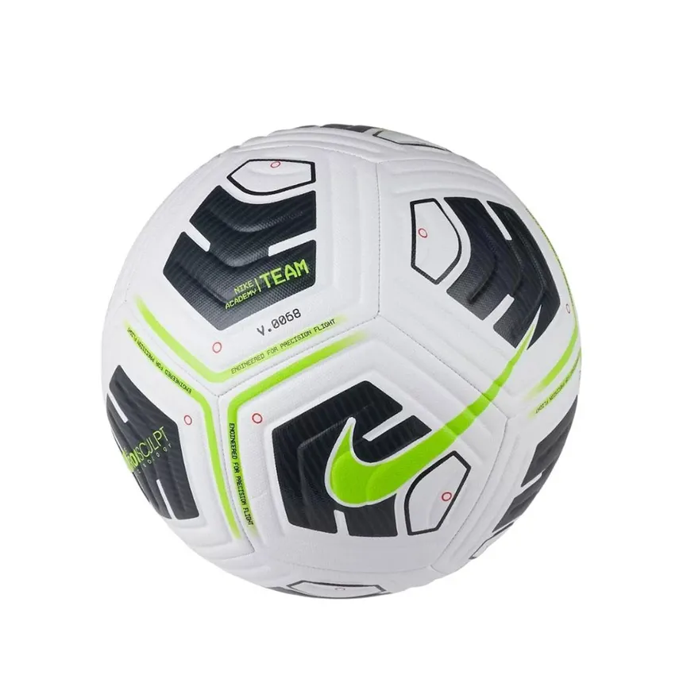
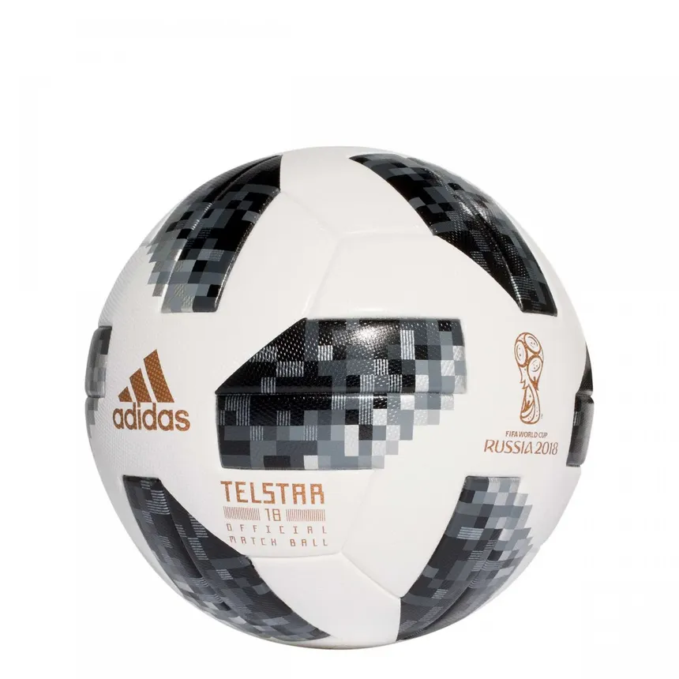
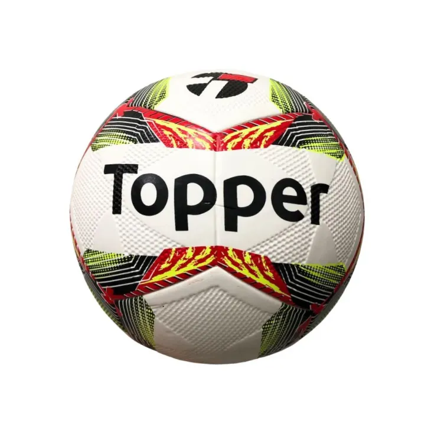
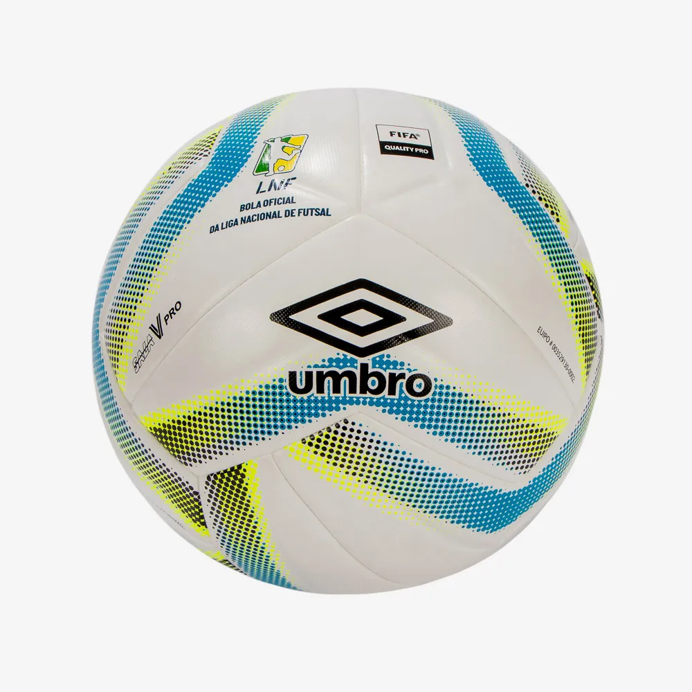
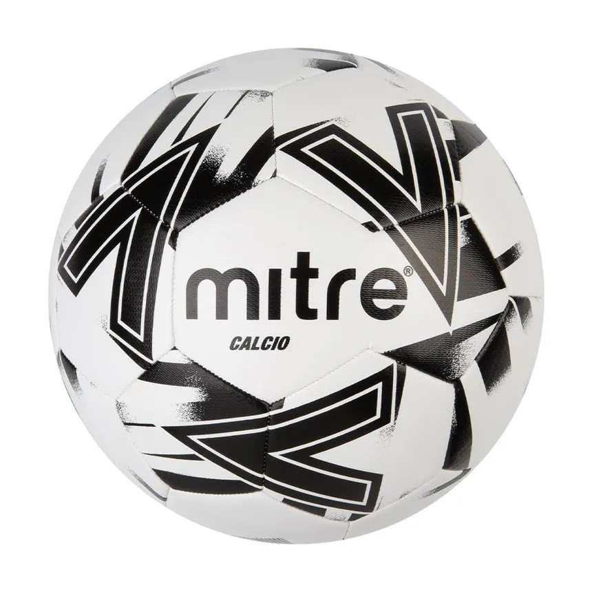
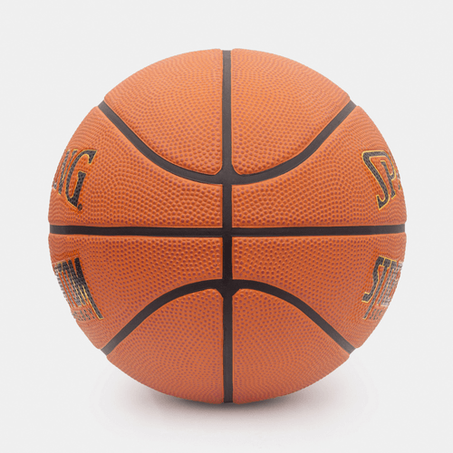
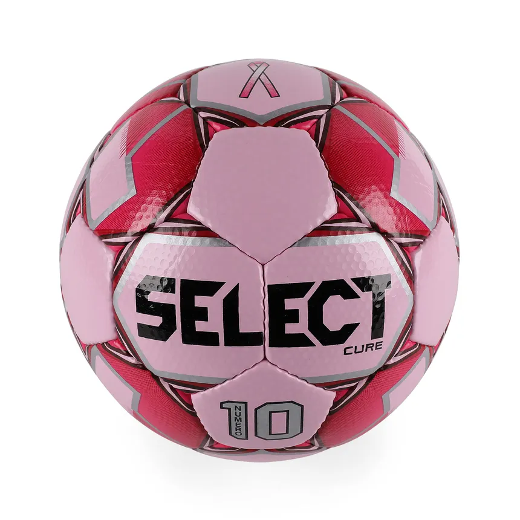

Nike
A Nike é conhecida por produzir bolas de alta qualidade para diversas modalidades esportivas, como futebol, basquete e futsal.
Mais Informações

Adidas
A Adidas é uma das marcas mais renomadas no mundo dos esportes e se destaca na fabricação de bolas de alta qualidade para futebol, basquete, vôlei e outras modalidades. Suas bolas são usadas em competições de alto nível, como a Copa do Mundo da FIFA, a UEFA Champions League e várias ligas nacionais.
Mais Informações

Topper
A Topper é uma marca tradicional no mercado esportivo, conhecida especialmente por suas bolas de futebol e futsal, que são amplamente utilizadas em campeonatos brasileiros.
Mais Informações

Umbro
Fornece bolas para diversas ligas e é reconhecida pela durabilidade.
Mais Informações

Penalty
Muito usada em campeonatos brasileiros, principalmente no futsal.
Mais Informações
Mitre
Marca tradicional no Reino Unido, fornecedora de bolas para a English Football League.
Mais Informações

Spalding
Principal fabricante de bolas de basquete, incluindo a NBA por muitos anos.
Mais Informações

Select
Marca dinamarquesa conhecida por suas bolas de futebol e handebol de alta qualidade.
Mais Informações
